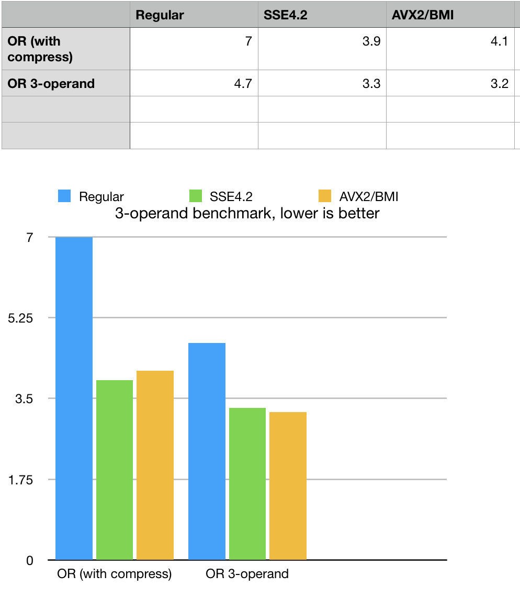
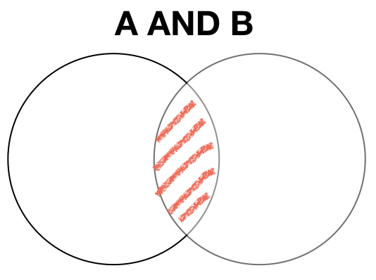
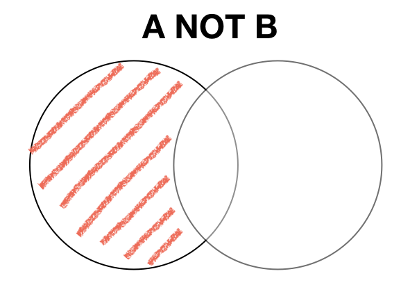

Algebra or Sets and Logical operations
Jan 2019
Introduction
Algebra of sets and logical computing is a backbone and the engine of BitMagic library. This document will provide an overview of set and logical operations, truth tables, venn diagrams, notes on use cases and patterns. Efficient implementation of algebra of sets assumes that sets are represented as sorted arrays of unsigned integers. BitMagic also implements Compressed Algebra of Sets, where source set is compressed serialized BLOB.
Algebra of sets is traditionally used in Information Retrieval systems (inverted indexes) and DataBase management to implement fast logical queries based on AND, OR, NOT boolean logic. Another application is AI tasks related to classifications and clutering (unsuperwised learning).
All these applications need performance and memory efficiency.
Why bit-vectors?
Integer sets can be equivalently presented as bit-vectors to allow fast and SIMD parallel operations on sets using boolean algebra. Boolean algebra denotes truth valeus: "true"(1) or "false" (0), which maps into bit-values of a vector. A set can be represented as a sequence of bits. Plain bit-vectors are not always memory effcient for sparse or dense cases, to address this BitMagic uses adaptive compression, which is transparent, all set operations just work.
Logical operations on bits, are very fast and love wide SIMD registers but SIMD alone is not a silver buller. Bitmap operations are very often memory bound, so wide SIMD regaiters cannot be used effciently. BitMagic library offers a robust set of logical programming operations to efficiently re-use resources: RAM, CPU cache, memory bandwidth.
Algebra of Sets is a relatively simple thing and can be fully implemented on just a few operations: set assignment(s), AND, OR, NOT. Implementation of various logical compute patterns in BitMagic produced a reach set of APIs and requires a tutorial to explain use cases.
Logical API groups and general usage patterns
-
Basic 2-operand logical operations on vectors (OR, AND, MINUS, etc).
VectorA = VectorA OPERATION VectorB. -
3-operand logical operations on vectors.
Target = ArgA OPERATION ArgB.Source operands are immutable in this case. Operations of this type can also fuse an optimization/compression step - Operations between vector and list of integers (sorted or unsorted set). Mutable, changes the target vector. It is very often used for loading content from an STL container, C-arrays. Typical use case here is index construction. It can be also used for cases, when keeping a whole bit-vector is ineffcient (small integer lists), but final result needs a logical operation.
- Operations between vector and serialized BLOB. Indexes and sets do not sit im memory all the time, BitMagic containers (all not just bvector<>) can be be saved and restored as a BLOB. Deserialization can be fused with a logical operation (memory efficiency, minimizes memory copying). Logical operations with a BLOB are based on operation codes, which makes it easy to build an SQL-like query language interpetor.
-
Fast aggregator (
bm::aggregator<>). Aggregator is used when we need to run an operation on groups of vectors. Aggregator uses optimization techniques to prune the search space and minimize memory access. The best usage pattern here when we can have many (say more than 5) vectors or groups of vectors. Aggregator allocates its own temporary memory so the best usage model here is to create it once (per thread) and reuse it to run various operations on bit-vector groups. BitMagic library uses aggregator for searches in bit-transposed sparse matrices.Aggregator has an option to perform on-the-fly optimization(compression) of the result vector, which is faster than a separate call to
bvector<>::optimize().
Why so many different ways to do the same?
Short answer: performance and convinience. Different use cases need different patterns and API implementations.
Logical bit-wise operations rely on very basic and very fast hardware. There should be a compelling reason to have different APIs to do over-engineering like this?
Top performance is needed for a few reasons.
- Full scale search systems often set a time budget, which is human factor. How long user wants to wait? Very often results need to be ready within hundreds of milliseconds. Fast system can evaluate multiple search hypothesis and combinations of logical formulas "cats AND dogs", "cats OR dogs", "cats BUT NOT dogs", etc. To see what is more relevant to the query. Fast speed can be translated into better, more relevant results. Smarter system.
- Better ranking. Again, this is about search budget. Logical search phase on inverted indexes would often require result set ranking to bring the most relevant data on top. Without touching details of ranking algorithms, this pahse can be expensive (yet important) so it is important to finish the preliminary search space reduction faster. Ranking algorithms itself may use logical operations and binary classifiers to understand how search results cluster, fast loical operations are helpful here as well.
- In the absense of fast implementation search systems often need to truncate results, say, we find only first 100. It is fine in many cases, but it is a lot more convenient if search is capable of bringing the whole results set (as a compressed vector) so that later stage (ranking or something else) can pick ten best out of thousands, not one hundred or work on the whole complete result set if it needs to. For example, later stage may be not ranking but big data visualization capable of its own data reduction and display techniques to show a meaningful representation of search result set. Search set truncation makes such scenarious hard.
Quick example

This example (part of BitMagic performance benchmark) a difference in 2-operand and 3-operand set union (logical OR). Example shows how to do functionally equivalent operations but 3-operand logic works faster in this case, because it fuses multiple operations (copy, OR and optimize). Variety of logial operations gives the right tool for every use case.
#include "bm.h"
void OrTest()
{
bm::bvector<> bv1, bv2;
bm::bvector<> bvt1, bvt2;
generate_bvector(bv1, 40000000, false);
generate_bvector(bv2, 40000000, false);
{
TimeTaker tt("OR-optimize (2 operand) bvector test", REPEATS*4);
for (unsigned i = 0; i < REPEATS*4; ++i)
{
bvt1 = bv1;
bvt1 |= bv2;
bvt1.optimize();
}
}
{
TimeTaker tt("OR-optimize (3 operand) bvector test", REPEATS*4);
for (unsigned i = 0; i < REPEATS*4; ++i)
{
bvt2.bit_or(bv1, bv2, bvect::opt_compress);
}
}
}
Subset, supersets, cardinality and dimentionality of bit-vector based sets
Before going farther with API description lets discuss a few assumptions of BitMagic library.
By default bvector<> does not require you to specify its size. The sparse vector usage model
is based on automatic memory management (somewhat similar to STL map<>) where you just load your set
and container takes care of the memory management.
Set cardinality on bitsets is defined as population count bvector<>::count().
It is assumed that all our sets are really sub-sets of a super set U with a maximum cardinality of 2^31-1 (32-bit space). If you invert an empty bit-set - you get a superset (all bits are set to 1).
In some cases you don't need or want to operate on a full superset power. bvector<> has a resize() function, which you can use to set the maximum size (not cardinality). Set size defines the maximum element.
It should be noted, that explicitly setting the size does not save you much memory it is not a resource management thing. In terms of algebra of sets you are defining maximum possible cardinality or just size of your superset.
Operations on sets of reduced cardinality
Invert will only flip the bits in the closed range of [0..size()-1]. Other operations (OR, AND) will take size into account and automatically resize the target to the maximum of all arguments (maximum superset).
A question to ask here is why AND has to extend the superset, while it is clear (and even axiomatic) that sub-set intersection of small set with a bigger sub-set is always empty? Automatic extencion was done to make a clear rule of managing super-sets: the largest super-set defines the dimentionality, regardless of the operation we use on it.
Quick recap
bvector<>::size()returns dimentionality (default is full 32-bit space)bvector<>::count()returns cardinality (actual number of elements in the set)- Logical operations change the size (dimentionality) to be maximum of operands even if cardinality gets reduced
- Logical operations change the cardinality based on logical truth tables of a particular operation
Set Union (OR)
Logical disjunction (OR) truth table

| A | B | A OR B |
|---|---|---|
| 0 | 0 | 0 |
| 1 | 1 | 1 |
| 1 | 0 | 1 |
| 0 | 1 | 1 |
| Method | Notes | #include | |
|---|---|---|---|
| bvector<>::bit_or(bv1) |
Set union: A = A OR B This is the most basic set OR operation
where destination vector is also one source operand.
|
bm.h | |
| bvector<>::bit_or(bv1, bv2) |
Set union: T = A OR B This is 3-operand OR
where destination vector is a product of two arguments.
Arguments are const / immutable. Function allows to fuse
together assignment, logical operation and optimization/compression of
the target vector.
|
bm.h | |
| bvector<>::combine_operation(bv1, opcode) |
Set union via operation code BM_OR: A = A opcode B .
Same as bvector<>::bit_or() but uses operation code
(convineince for building a logical interpeter).
|
bm.h | |
| operation_deserializer<>::deserialize(bv_T, BLOB, temp_block, opcode) |
Set union via operation code bm::set_OR: A = A opcode BLOB .
This method fuses de-serialization with a logical operation which is faster
than deserialization and subsequent operation. BLOB - serialized bit-vector.
|
bmserial.h | |
| bm::combine_or(bv_T, it_start, it_end) |
Set union between bit-vector and an integer list: A = A OR {list-of-ints} .
This method sets all list elements as bits in the target bit-vector.
Compatible with STL iterators.
|
bmalgo.h | |
| bvector<>::set(C-array, size, sort_hint) |
Set union between bit-vector and an integer list: A = A OR {list-of-ints} .
This method sets all list elements as bits in the target bit-vector.
Takes C-style array, faster more direct method to load external array.
|
bm.h | |
| aggregator<>::combine_or() |
Set union for a group of bit-vectors A = OR(list-of-vectors) .
Optimized method to union a group of vectors. Result can be automatically
on the fly optimized/compressed, which is faster than a separate optimize call.
|
bmaggregator.h | |
| bvector<>::merge(bv1) |
Merge operation is a special case 2-operand OR.
It can destroy the source vector to borrow memory blocks from it, both operands are mutable.
Moving memory is faster. Use case here is multi-threade map-reduce at the reduce stage, where
partial results are no longer needed.
|
bm.h |
Set Intersect (AND)
Logical conjunction (AND) truth table

| A | B | A AND B |
|---|---|---|
| 0 | 0 | 0 |
| 1 | 1 | 1 |
| 1 | 0 | 0 |
| 0 | 1 | 0 |
| Method | Notes | #include | |
|---|---|---|---|
| bvector<>::bit_and(bv1) |
Set union: A = A AND B This is the most basic set AND operation
where destination vector is also one source operand.
|
bm.h | |
| bvector<>::combine_operation() |
Set union via operation code BM_AND: A = A opcode B .
Same as bvector<>::bit_and() but uses operation code
(convineince for building a logical interpeter).
|
bm.h | |
| operation_deserializer<>::deserialize() |
Set union via operation code bm::set_OR: A = A opcode BLOB .
This method fuses de-serialization with a logical operation which is faster
than deserialization and subsequent operation. BLOB - serialized bit-vector.
|
bmserial.h | |
| bm::combine_and() |
Set union between bit-vector and an integer list: A = A AND {list-of-ints} .
This method sets all list elements as bits in the target bit-vector.
Compatible with STL iterators.
|
bmalgo.h | |
| bvector<>::keep(...) |
Set union between bit-vector and an integer list: A = A AND {list-of-ints} .
This method sets all list elements as bits in the target bit-vector.
Takes C-style array, faster more direct method to load external array.
|
bm.h | |
| aggregator<>::combine_and() |
Set union for a group of bit-vectors A = AND(list-of-vectors) .
Optimized method to union a group of vectors. Result can be automatically
on the fly optimized/compressed, which is faster than a separate optimize call.
|
bmaggregator.h |
Set Complement (Negation) (NOT)
Logical inversion (NOT) truth table
| A | NOT A |
|---|---|
| 0 | 1 |
| 1 | 0 |
| Method | Notes | #include |
|---|---|---|
| bvector<>::invert() |
Set union: A = NOT A
Mutable, non-const NOT, changes the object, flips all the bits.
|
bm.h |
Set subtraction (AND NOT)
Subtraction (AND NOT) truth table

| A | B | A AND NOT B |
|---|---|---|
| 0 | 0 | 0 |
| 1 | 0 | 1 |
| 0 | 1 | 0 |
| 1 | 1 | 0 |
| Method | Notes | #include | |
|---|---|---|---|
| bvector<>::bit_sub(bv1) |
Set subtraction: A = A AND NOT B This is the most basic set SUB operation
where destination vector is also one source operand.
|
bm.h | |
| bvector<>::bit_sub(bv1, bv2) |
Set subtraction: T = A AND NOT B This is 3-operand SUB
where destination vector is a product of two arguments.
Arguments are const / immutable. Function allows to fuse
together assignment, logical operation and optimization/compression of
the target vector.
|
bm.h | |
| bvector<>::combine_operation(bv1, opcode) |
Set subtraction via operation code BM_SUB: A = A opcode B .
Same as bvector<>::bit_or() but uses operation code
(convineince for building a logical interpeter).
|
bm.h | |
| operation_deserializer<>::deserialize(bv_T, BLOB, temp_block, opcode) |
Set subtraction via operation code bm::set_OR: A = A opcode BLOB .
This method fuses de-serialization with a logical operation which is faster
than deserialization and subsequent operation. BLOB - serialized bit-vector.
|
bmserial.h | |
| bm::combine_sub(bv_T, it_start, it_end) |
Set union between bit-vector and an integer list: A = A SUB {list-of-ints} .
This method sets all list elements as bits in the target bit-vector.
Compatible with STL iterators.
|
bmalgo.h | |
| bvector<>::clear(C-array, size, sort_hint) |
Set subtraction between bit-vector and an integer list: A = A SUB {list-of-ints} .
This method sets all list elements as bits in the target bit-vector.
Takes C-style array, faster more direct method to load external array.
|
bm.h | |
| aggregator<>::combine_and_sub() |
Aggregator AND-SUB works on two groups of arguments: first group
is ANDed (set intersect) and second group is subtracted from the AND result.
The first group can consist of just one vector and this would be an equivalent of AND NOT.
Result can be automatically on the fly optimized/compressed, which is faster than a separate
optimize call.
|
bmaggregator.h |
Exclusive disjunction (XOR)
XOR truth table

| A | B | A XOR B |
|---|---|---|
| 0 | 0 | 0 |
| 1 | 0 | 1 |
| 0 | 1 | 1 |
| 1 | 1 | 0 |
| Method | Notes | #include |
|---|---|---|
| bvector<>::bit_xor(bv1) |
Exclusive disjunction: A = A XOR B This is the most basic set XOR operation
where destination vector is also one source operand.
|
bm.h |
| bvector<>::bit_xor(bv1, bv2) |
Exclusive disjunction: T = A XOR B This is 3-operand XOR
where destination vector is a product of two arguments.
Arguments are const / immutable. Function allows to fuse
together assignment, logical operation and optimization/compression of
the target vector.
|
bm.h |
| bvector<>::combine_operation(bv1, opcode) |
Exclusive disjunction via operation code BM_XOR: A = A opcode B .
Same as bvector<>::bit_xor() but uses operation code
(convineince for building a logical interpeter).
|
bm.h |
| operation_deserializer<>::deserialize(bv_T, BLOB, temp_block, opcode) |
Set union via operation code bm::set_OR: A = A opcode BLOB .
This method fuses de-serialization with a logical operation which is faster
than deserialization and subsequent operation. BLOB - serialized bit-vector.
|
bmserial.h |
| bm::combine_xor(bv_T, it_start, it_end) |
Exclusive disjunction between bit-vector and an integer list:
A = A XOR {list-of-ints} .
This method sets all list elements as bits in the target bit-vector.
Compatible with STL iterators.
|
bmalgo.h |
Tutorial example
All APIs and examples provided in this tutorial are available: